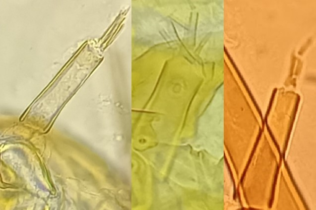
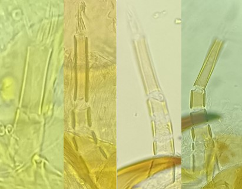
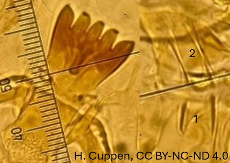

Sous famille des Tanypodinae
Dorsomentum sans dents



Palpe maxillaire avec 2-6 segments basaux
si seulement 2 segments, le 1er segment basal est de même taille que le 2ème segment. Pseudoradula non élargie postérieurement
Segment basal du palpe maxillaire avec 2 segments inégaux (partie basale deux fois plus courte que
le 2ème segment)
Pseudoradula élargie postérieurement